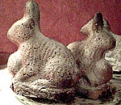
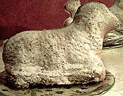

Hasen und Lämmchen -> Marmorkuchen
250 g Butter oder Margarine
200 g Zucker
4 Eier
1/8 l Milch
400 g Mehl
100 g Kartoffelstärke
1 P. Backpulver
Je 40 g Zucker und Kakaopulver
etwas Puderzucker
Die Backformen gut fetten und mit Paniermehl ausstreuen.
Butter und Zucker schaumig rühren, nach und nach die Eier zugeben und weiter rühren, dann die Milch. Anschließend Mehl, Kartoffelstärke und Backpulver mischen und darunter rühren. Die Hälfte des Teiges in die Formen geben.
Zucker und Kakao unter den restlichen Teig rühren und dann auf den hellen Teig geben. Mit einer Gabel spiralförmig die Teige durcheinanderziehen.
Auf der unteren Schiebeleiste bei 200 Grad ca. 30 bis 40 Minuten backen.
Mit Puderzucker bestäuben.
Der Teig reicht für 2 Lämmchen oder 4 Häschen, oder 1 Lämmchen und 2 Häschen.
Wenn nicht Ostern ist, schmeckt der Kuchen auch, wenn er in einer normalen Gugelhupfform gebacken wurde.